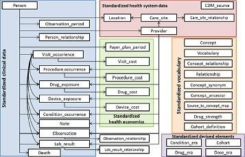
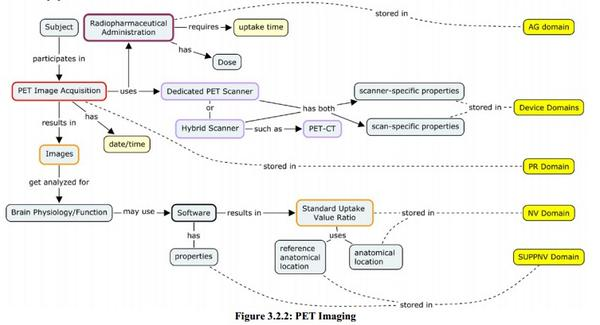
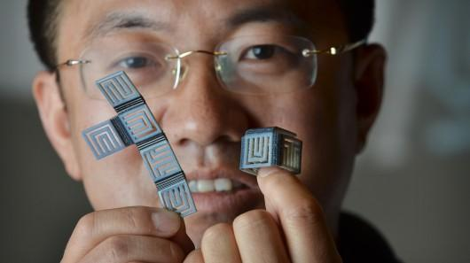

September 2014
"We (@Tamr_Inc) are to enterprise data what crawlers were to the consumer Internet." --@andyhpalmer ow.ly/x1kVG
After a great day at @bokmassanGbg it's time to catch on #RESTfest @restfest github.com/RESTFest/2014-… and #APIconUK apiconuk.com
On my way home after a busy day, now catching up on #euon2014 European Ontology Network Workshop at #EUDAT plenary eudat.eu/euon/euon-2014…
"EAV system implemented through RDF, the RDF Schema language may conveniently be used to express such metadata." en.m.wikipedia.org/wiki/Entity%E2…
"EAV systems trade off simplicity in the physical and logical structure of the data for complexity in their metadata" en.m.wikipedia.org/wiki/Entity%E2…
"An EAV database is essentially unmaintainable without numerous supporting tables that contain supporting metadata." en.m.wikipedia.org/wiki/Entity%E2…
Reading the excellent Wikipedia page on Entity–attribute–value model en.m.wikipedia.org/wiki/Entity%E2…
Looking at the draft OMOP Common Data Model v5 omop.org/sites/default/… #ObservationalData

Bookmarked: "Replication of the OMOP experiment in Europe: evaluating methods for risk identification in electro... ift.tt/1soIyWV
Homer, Plato, Hercules, Achilles: parts of @OHDSI Observational Health Data Sciences and Informatics ohdsi.org "the next OMOP"
Bookmarked: "Mini-Sentinel and Regulatory Science — Big Data Rendered Fit and Functional" on CiteUlike ift.tt/1xd8eHe
Bookmarked: "Estimating uncertainty in observational studies of associations between continuous variables: examp... ift.tt/1ulAAhn
On the bus this morning: Talking API design for interaction with @kerusan the devoper behind of the app "Nästa vagn" ift.tt/1cZSQDm
Looking at @CDISC Alzheimer concept maps cdisc.org/system/files/a… made me revisit of my blog kerfors.blogspot.se/2012/09/mind-m…

At 9pm CEST tonight -> Hang out: Graphs & Vaults, Getting to Know Knowledge Bases #ISOOSIchat via @bill_slawski isoo.si/Hx4z7
"BBC Things" bbc.in/1slmY5G via @bbcinternetblog <- Kind of what I envisioned in "Navigating in NewsSpace" citeseerx.ist.psu.edu/viewdoc/summar…
Awesome -> RT @bbcinternetblog: "it's a window into the live data that powers the BBC online" bbc.in/1sVYFpe #LnkedData
PICO ontology 4 components of a clinical question: Patient (Population or Problem), Intervention, Comparison, Outcome data.cochrane.org/ontologies/pico
Learned about #Rstat package Statistics Sweden #sweSCB ropengov.github.io/general/2013/1… in the MOOC from @karolinskainst on R edx.org/course/kix/kix…
The coming week I'll follow #RDAplenary @RDA_Europe Research Data Alliance Plenary Meeting and co-events, Amsterdam rd-alliance.org/plenary-meetin…
#CochraneTech Linked Data from @cochranecollab data.cochrane.org <- Excellent work by @mavergames
Congrats Paul -> RT @pgroth: I'm joining @ElsevierLabs ! thinklinks.wordpress.com/2014/09/18/els…
Just learned about 4D -> RT @3DPrintGirl: What Does The Future Hold For 3D & 4D Printing? mf.tt/aa14Q

FDA/PhUSE Working Groups Update, Semantic Technology: Representing a Protocol in RDF w/ @iamnotthelotus youtu.be/3JJSMAGnANs?t=… @PHUSETwitta
The tweets about the excellent #ICAAC keynote by Dr John Rex made me link colleagues to @pebourne's rules on tweeting ploscompbiol.org/article/info%3…
In my 1st @w3c Data Activity w3.org/2013/data/ call. Great to hear voices of @philarcher1 @BernHyland @danbri @Prototypo et al
Great blog post -> RT @cdsouthan: Looking for anti-Ebola medicinal chemistry collaborative collating
lnkd.in/dWH_9iw
lnkd.in/dWH_9iw
Today and tomorrow I'll follow #BigDiP from the Big Data in Pharma conference big-datapharma.com in Boston
#OpenData initiative: Uppsala Monitoring Centre WHO Global ICSR statistics. API "with the intention to use RDF" umc-products.com/OpenDataInitia…
@semanticfire ...a couple of the great people behind FHIR made a joke about it for fhir.furore.com/Events/DevDays… in Amsterdam cc: @motorcycle_guy
@semanticfire Sorry Bart. FHIR wiki.hl7.org/index.php?titl… is a health data standard initiative with great momentum...
Google Fellow Ramanathan V. Guha: “Schema.Org is a vocabulary, it is not the vocabulary” semanticweb.com/schema-org-fir… via @SemanticWeb
Följ med på tidsresa bland sociala medier gp.se/nyheter/gotebo… <- Kul artikel och tidslinje med @tlindroth
MT @WIRED: Most code is an ugly mess How to make it pretty wrd.cm/1q7QY2f <-Similar to @jaykreps' Event Logs engineering.linkedin.com/distributed-sy…
Today and tomorrow I'll follow #DPharm2014: Disruptive Innovations to Advance Clinical Trials theconferenceforum.org/conferences/di…
Excellent #longread -> RT @aaranged: What is JSON-LD? A Talk with Gregg Kellogg (@Gkellogg) - bit.ly/1tKonlX #jsonld
@pharmagossip @InfectiousChris Because the people behind it need to catch up on publishing 5-star #opendata clange.github.io/5stardata-tuto…
Bookmarked: "Electronic processing of informed consents in a global pharmaceutical company environment." on CiteUlike ift.tt/1lUcYgJ
Bookmarked: "Automated clinical trial eligibility prescreening: increasing the efficiency of patient identificat... ift.tt/1lWf67Y
Generating Self-Explanatory Data Repositories from Clinical Research Datasets using Referent Tracking icbo14.com/sessions/gener… #ICBO2014
Good to hear Harold Solbrig, Eric Prud'hommeaux et al discuss #ValueSets in RDF in today's @w3c HCLS call w3.org/2014/09/09-hcl…
Looking forward to follow two MOOC:s starting today edx.org/school/kix from @karolinskainst together with colleagueas and my sister
Using #d3js -> @DrTaha_FDA: Impressive demo using @openFDA API for adverse drug event bit.ly/1uCV5CR (video youtu.be/qtSfJUSbMmI)
"The alternative to versioning is to not introduce breaking changes." --@andreaskrohn apiux.com/2013/05/14/api…
MT @lysander07: 21% of all pages on the web contain structured data that we can use --@philarcher1 at #semantics2014 w3.org/2014/Talks/090…
Will follow on the bus home -> MT @jahendler: healthcare and big data symposium idea.rpi.edu/news/11-08-14/… webcast at bitly.com/bigdataevent
No 3) hashtag to catch up on #semantics2014 annual SEMANTiCS conference (formerly known as I-Semantics) semantics.cc
No 2) hastag to catch up on: #LDQ2014 workshop on #LinkedData quality ldq.semanticmultimedia.org/programme
Nice chat with @SpyrosKotoulas on IBM's early #LinkedData work for social care data ncbi.nlm.nih.gov/pubmed/25160275 #MIE2014 cc @torbjornhagglof
Bookmarked: "Enabling Person-Centric Care using Linked Data Technologies." on CiteUlike ift.tt/1A47qkZ
Thx for a nice #MIE2014 keynote @ustunb. You said "go beyond search engine text search". Checkout what Google do: searchengineland.com/demystifying-k…
@danbri I wanted to ping #MIE2014 folks on Health / Medical vocab. for schema.org blog.schema.org/2012/06/health… What's the status??
Note to self: Read up on BioTop, a Top-Domain Ontology for the Life Sciences imbi.uni-freiburg.de/ontology/bioto… #MIE2014 #SemanticHealthNet
Thx @yampeku You will find CDISC models as RDF Schemas interesting github.com/phuse-org/rdf.… cc @ianmcnicoll @omowizard @openEHR @cdiscSHARE
Now 2 workshop session on Interoperability Challenges for enabling secondary use of EHRs w3.org/wiki/HCLS/work… #MIE2014
Hi @TrishWhetzel @jpmccu our #MIE2014 paper on mapping justification started from our nice chat at #ICBO2013 see kerfors.blogspot.com.tr/2014/08/prepar…
"Reality behind Demographic data" on the challanges in standards for eg Sex/Gender ceur-ws.org/Vol-833/paper2… cc: @GenderMedKI #MIE2014
Do you create medical terminology mappings? Join us in #CIM2014 workshop macs.hw.ac.uk/~fm206/cim14/ on mapping justification provenance #MIE2014
Nice #MIE2014 presentation "Beyond Copy and Paste..using sticky notes in MedWise a "web 2.0 "EHR ehr2.org (site not up now)
Hi @TrishWhetzel did you see the nice #MIE2014 paper on Google Glass Emprowring Patients with Skin Allergies ncbi.nlm.nih.gov/pubmed/25160245
Great #MIE2014 morning keynotes: #ihtsdo @snomed and @WHO #ICD9 as background to our paper on mapping justifications ncbi.nlm.nih.gov/pubmed/25160255
My #MIE2014 presentation "A Framework for Evaluating and Utilizing Medical Terminology Mappings" is up slideshare.net/kerfors/mie2014
I didn't know that IHTSDO (Int. Health Terminology Standards Dev. Org.) ihtsdo.org that owns @SnomedCT is based in Copenhagen
Bookmarked: "A framework for evaluating and utilizing medical terminology mappings." on CiteUlike ift.tt/1nndKhU
Interersting -> Back-story on Novartis LCZ696 database links lnkd.in/dgVsd23 from @cdsouthan #ESCCongress
Déjà vu: #ISO11079 MetaData Registry modifying the model to handle variances for clinical data elements ncbi.nlm.nih.gov/pubmed/25160208 #MIE2014
Bookmarked: "A reference data model of a metadata registry preserving semantics and representations of data elem... ift.tt/1u8oLsj
Evaluation DB with evaluation studies in medical informatics evaldb.umit.at mentioned by #MIE2014 keynote speaker Elske Ammenwerth
Dear #MIE2014 keynote speaker: Google beyond text search: #KnowledgeGraph google.com/insidesearch/f… Next #KnowledgeVault newscientist.com/article/mg2232…
iCAT Collaborative Authoring Tool for ICD-11 icat.stanford.edu built on #semanticweb standards web.stanford.edu/~natalya/paper… #MIE2014